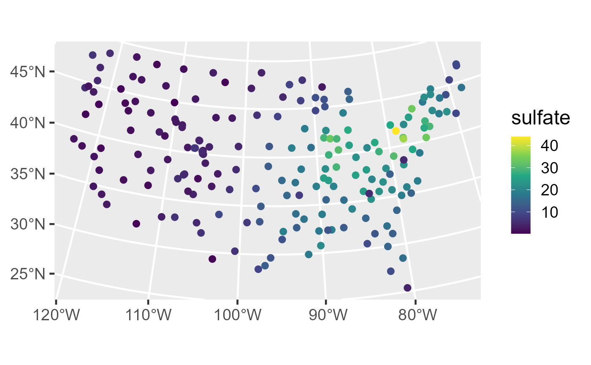
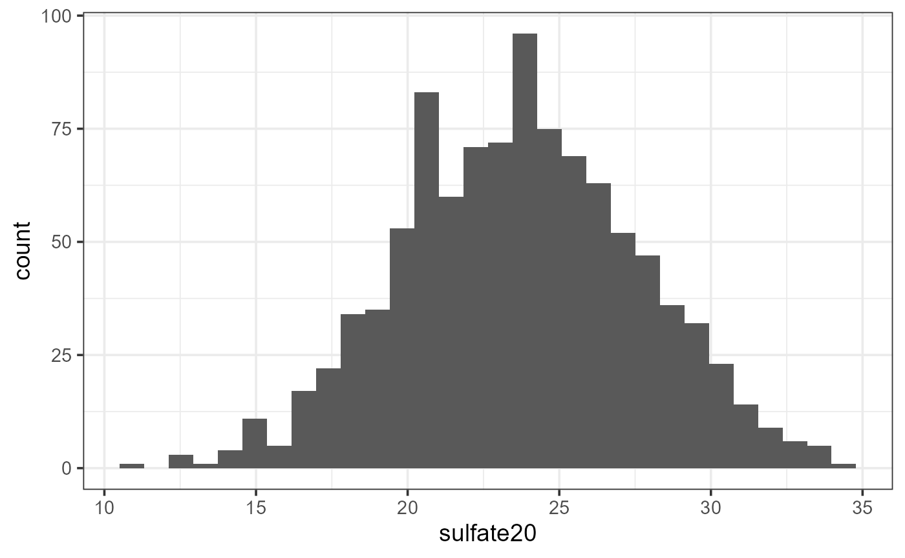
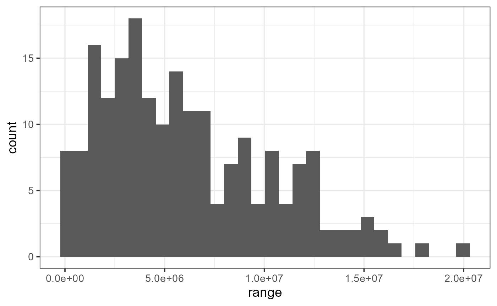
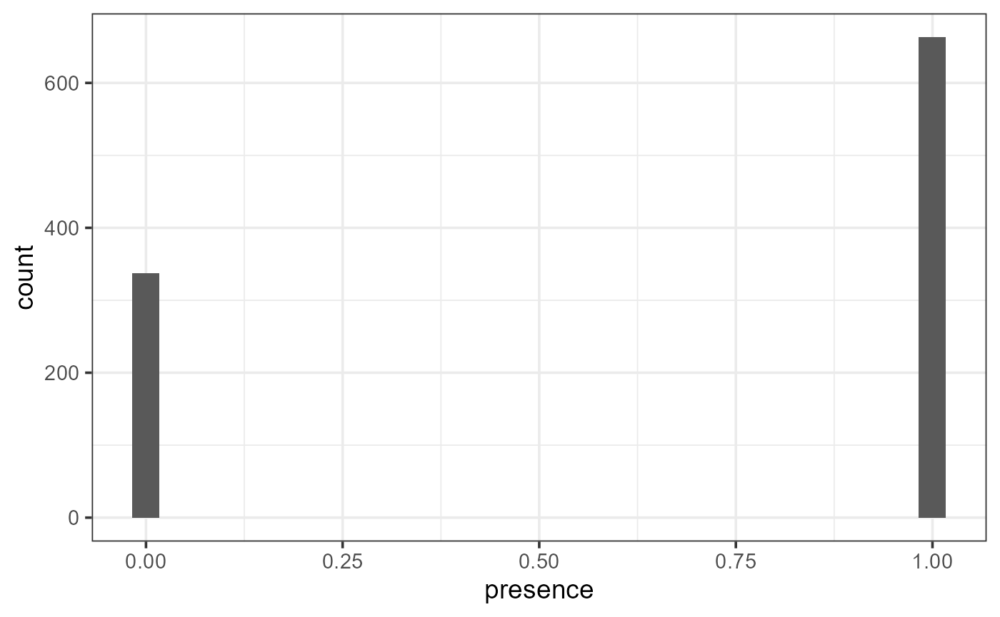

vignettes/articles/conditional.Rmd
conditional.Rmdspmodel is an R package used to fit,
summarize, and predict for a variety of spatial statistical models. This
vignette explores conditional(), which draws many plausible
random samples of model parameters and newdata, an approach
known as conditional simulation. Before proceeding, we load
spmodel, sf, and ggplot2 by
running
If using spmodel in a formal publication or report,
please cite it. Citing spmodel lets us devote more
resources to it in the future. We view the spmodel citation
by running
citation(package = "spmodel")#> To cite spmodel in publications use:
#>
#> Dumelle M, Higham M, Ver Hoef JM (2023). spmodel: Spatial statistical
#> modeling and prediction in R. PLOS ONE 18(3): e0282524.
#> https://doi.org/10.1371/journal.pone.0282524
#>
#> A BibTeX entry for LaTeX users is
#>
#> @Article{,
#> title = {{spmodel}: Spatial statistical modeling and prediction in {R}},
#> author = {Michael Dumelle and Matt Higham and Jay M. {Ver Hoef}},
#> journal = {PLOS ONE},
#> year = {2023},
#> volume = {18},
#> number = {3},
#> pages = {1--32},
#> doi = {10.1371/journal.pone.0282524},
#> url = {https://doi.org/10.1371/journal.pone.0282524},
#> }Before proceeding, we set a reproducible seed:
set.seed(0)spmodel
predict() returns a single best prediction (and its
standard error) at each new location, one location at a time. However,
predict() does not tell us how predictions at different
locations may relate to one another. Suppose we instead want to know
something about the entire predicted surface at once (e.g., quantiles,
extreme values, threshold exceedances, etc.). Answering these types of
questions requires jointly simulating the predicted surface, not just
each location’s pointwise mean and standard error.
conditional() provides exactly this: repeated draws from
the joint distribution of the response (or, for
spglm()/spgautor() models, the latent process)
at a set of new locations, conditional on the observed data. Though
typically the focus on conditional simulation is on predictions at new
locations, conditional() also provides simulated values of
covariance and fixed effect model parameters. For technical details
regarding conditional simulation, see Zimmerman
and Ver Hoef (2024) and the Technical Details vignette.
The sulfate data is an sf object that
contains sulfate measurements in the conterminous United States (CONUS).
We first visualize the distribution of the sulfate data by running
ggplot(sulfate, aes(color = sulfate)) +
geom_sf(size = 2.5) +
scale_color_viridis_c() +
theme_gray(base_size = 18)
We fit an intercept-only spatial linear model with an exponential spatial covariance function by running
sulfmod <- splm(sulfate ~ 1, data = sulfate, spcov_type = "exponential")We draw 1,000 conditional simulations at every location in
sulfate_preds by running
sulf_cond <- conditional(sulfmod, newdata = sulfate_preds)
dim(sulf_cond)#> [1] 100 1000sulf_cond is a matrix with one row per row of
sulfate_preds and one column per sample (the default number
of samples is 1,000, controlled by the samples argument).
Each row is 1,000 draws from the predictive distribution of sulfate at
that location, and because the draws are joint (all locations are
simulated together for each sample/column), the spatial dependence among
locations is preserved within each column.
The 20th row of sulfate_preds looks like:
sulfate_preds[20, ]#> Simple feature collection with 1 feature and 0 fields
#> Geometry type: POINT
#> Dimension: XY
#> Bounding box: xmin: 562679.3 ymin: 1810052 xmax: 562679.3 ymax: 1810052
#> Projected CRS: NAD83 / Conus Albers
#> # A tibble: 1 × 1
#> geometry
#> <POINT [m]>
#> 1 (562679.3 1810052)At the 20th row of sulfate_preds, the mean and standard
deviation from predict() closely match the same statistics
calculated from the conditional simulations:
predict(sulfmod, sulfate_preds[20, ], se.fit = TRUE)#> $fit
#> 1
#> 23.61902
#>
#> $se.fit
#> 1
#> 3.866808
fit_cond <- mean(sulf_cond[20, ])
se_cond <- sd(sulf_cond[20, ])
c(fit_cond = fit_cond, se.fit_cond = se_cond)#> fit_cond se.fit_cond
#> 23.683964 3.907746We can visualize the distribution of conditional simulations at this location:
ggplot(data.frame(sulfate20 = sulf_cond[20, ]), aes(x = sulfate20)) +
geom_histogram(bins = 30) +
theme_bw(base_size = 14)
Using conditional simulation, we can compute quantities of this
predictive distribution, like quantiles, that are not able to be
computed via predict():
q_10 <- as.numeric(quantile(sulf_cond[20, ], probs = 0.1))
q_median <- median(sulf_cond[20, ])
q_95 <- as.numeric(quantile(sulf_cond[20, ], probs = 0.95))
c(q_10 = q_10, q_median = q_median, q_95 = q_95)#> q_10 q_median q_95
#> 18.91757 23.65707 30.18432Now suppose we want to know the proportion of
sulfate_preds locations with sulfate concentration above 5.
Again, this nonlinear function of the predicted surface cannot be
quantified by predict()’s pointwise estimates and standard
errors alone. Using the conditional simulations, we compute this
proportion once per sample (i.e., for each column of
sulf_cond) to obtain a distribution of the proportion
itself:
Then we can return the mean and standard error of this proportion:
fit_cond <- mean(prop_exceed)
se_cond <- sd(prop_exceed)
c(fit_cond = fit_cond, se.fit_cond = se_cond)#> fit_cond se.fit_cond
#> 0.67917000 0.03496618We can also compute a quantile-based 95% confidence interval for the proportion:
ci_bounds <- as.numeric(quantile(prop_exceed, probs = c(0.025, 0.975)))
c(lwr = ci_bounds[1], upr = ci_bounds[2])#> lwr upr
#> 0.62 0.75By default, every draw in sulf_cond shares the same
fitted covariance parameters – only the fixed effects and the spatial
field are resimulated. For splm() model objects fit with
ddf = "satterthwaite" (the default when the sample size is
500 or fewer, as it is here), setting
simulate_covparams = TRUE additionally resamples the
covariance parameters themselves for each draw, propagating their own
estimation uncertainty into the result. This is considerably more
expensive than the default (a fresh factorization is required for every
sample), so it is generally reserved for small-to-moderate sample sizes
and a reduced samples.
We repeat the earlier sulfmod simulation with
simulate_covparams = TRUE:
sulf_cond_cp <- conditional(sulfmod, newdata = sulfate_preds, samples = 200, simulate_covparams = TRUE)Because this extra layer of uncertainty is additive, the standard deviation of the draws at a given location is larger than under the default (fixed-covariance-parameter) simulation:
#> default simulate_covparams
#> 3.907746 4.357306By default, conditional() returns simulated values for
newdata (output = "newdata", the default). Two
other outputs are available and can be combined with
"newdata" (or with each other) by supplying a character
vector to output:
"beta": The simulated fixed effect coefficients used to
generate each sample."object": The observed data, replicated once per sample
(useful for row-binding observed and predicted values together).For example, we can get simulated newdata values and
their corresponding simulated fixed effects together by running
cond_list <- conditional(sulfmod, newdata = sulfate_preds, samples = 200, simulate_covparams = TRUE, output = c("newdata", "beta", "cov"))
names(cond_list)#> [1] "newdata" "beta" "cov"
dim(cond_list$beta)#> [1] 1 200
dim(cond_list$cov)#> [1] 5 200We can visualize, for example, the conditional simulations of the spatial range parameter:
ggplot(data.frame(range = cond_list$cov[3, ]), aes(x = range)) +
geom_histogram(bins = 30) +
theme_bw(base_size = 14)
conditional() also works for spglm() and
spgautor() model objects. Because these models describe a
latent process \(\mathbf{w}\) on the
link scale rather than the response directly, the type
argument controls the scale of the simulated values:
type = "link" (the default) returns simulations of \(\mathbf{w}\),
type = "response" returns simulations of the mean on the
response (inverse link) scale, and type = "new"
additionally simulates a new observation from the response distribution
(e.g., a new Poisson count) with that mean.
We fit a spatial logistic regression model of moose presence and
simulate new observations at the locations in
moose_preds:
binmod <- spglm(presence ~ elev, family = "binomial", data = moose, spcov_type = "exponential")
moose_cond <- conditional(binmod, newdata = moose_preds, type = "new")Each row of moose_cond now contains 1,000 simulated
presences for that location rather than an underlying proportion,
reflecting both the uncertainty in the underlying probability surface
and the additional sampling variability for an individual observation
from the binomial distribution.
We can visualize the distribution of conditional simulations at the first location:
ggplot(data.frame(presence = moose_cond[1, ]), aes(x = presence)) +
geom_histogram(bins = 30) +
theme_bw(base_size = 14)